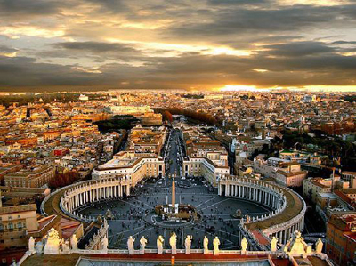

Rom

Rom är huvudstad i Italien och var även huvudstad i det romerska riket under antiken.
Rom är byggt på de berömda sju kullarna: Aventinen, Caelius, Capitolium, Esquilinen, Palatinen, Quirinalen och Viminalen. Under senare tid räknas även Janiculum, Pincio, Vatikanska kullen och Velia till Roms kullar. Floden Tibern genomkorsar staden. Staden ligger som lägst 13 meter över havet vid piazza del Popolo och som högst 121 meter över havet på monte Mario. Rom är också den grönaste staden i Europa på grund av dess många parker. Appia Antikas park är den största stadsparken i världen och den med mest monument. Den sträcker sig från Colosseum till Ciampino. Andra parker är Villa Doria Pamphili, Villa Borghese, Villa Ada, Villa Glori och Gianicolo.